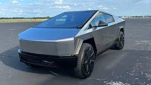
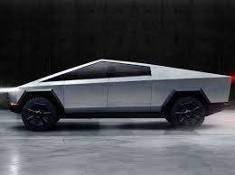

All Bookmarks
…
 @DriveTesla
- May 5
@DriveTesla
- May 5
…

driveTeslaCanada.ca
South Korean firm wins $300 million in Tesla Cybertruck parts sup...
Tesla is getting closer and closer to the start of Cybertruck production, and when it does some of the parts that will go into...
123
456
789
100k
@teslarati
- May 5
…

teslarati.com
Tesla Cybertruck production teased in $227M+ order for parts
Tesla ordered Cybertruck parts worth more than $227M from South Korean company Seoyon E-Hwa. The news teased...
299
958
493
90k